Programming Guide
- OWS Services
- REST Services
- Web User Interface
- Wicket Development In GeoServer
- Extension Points
- WPS Services
- Testing
- Security
- App-Schema Online Tests
Release Schedule
Starting with version 2.2 GeoServer releases follow a time boxed model in which releases occur at regular predictable frequencies rather than at ad-hoc dates. In a time boxed the software is released at predictable frequencies with whatever fixes, improvements, and feature are available at the time of release. This differs from the previous feature based model in which releases occur when a certain number of key features have accumulated.
To compensate for the inherent unpredictability of the release contents the model includes strict rules about what type of development is appropriate during specific periods of a branches life cycle. These rules include a suitably long hardening period for the unstable branch to mature and eventually become stable.
Release branches
At any given time GeoServer is undergoing two to three main branches of development.
- The stable branch in which only bug fixing, and smaller scale feature development occurs on
- The unstable (master) branch in which more experimental and larger scale feature development occurs
- The maintenance branch which was the previously stable branch that is nearing end of life and sees only the most stable development, typically mostly bug fixes.
Release cycle
On the stable branches release follow a monthly cycle in a which a new minor release occurs once a month. On the unstable branch releases follow a 6 month cycle in which a new major release occurs once every 6 months. The following diagram illustrates the cycle:
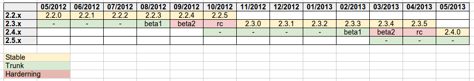
Things to note:
- monthly releases on the stable branch
- a four month open development period followed by two months hardening period on the unstable branch
- beta releases are supposed to be released out of the unstable series on a monthly basis
across the switch between open development and hardening, followed by the first release candidate - release candidates are pushed out every two weeks until we reach a stable code base, which will be released as the new major stable release
- the first release candidate marks the branch off of a new trunk, on which open development starts again
The time of the first release candidate marks the origin of a new stable branch in which the unstable branch becomes the stable branch, and the stable branches becomes a maintenance branch.
Every month, on the same day, a new release is issued from the stable branch using whatever revision of GeoServer/Geotools passed the last CITE tests. The release is meant to improve upon the previous release in both functionality and stability, so unless the project steering committee determines reasons to block the release it will happen regardless of what bug reports are in Jira. Pending resourcing, they can be fixed in the next release that comes out one month later.
At any given point in time there are two branches under the development, the stable branch and the master/unstable branch. Once every six months when the creation of a new stable branch occurs a third active maintenance branch is created. This branch is kept up to date with the stable stable for a period of one-month after which the final release on that branch is created. That said there is nothing against a developer continuing to maintain the branch or creating release from it, it is just not expected.
Development phases
The type of development that can occur on a branch is dictated by where the branch is in terms of its life cycle.
Stable branch
The type of acceptable development on the stable branch does not change much over its lifetime. It is meant for bug fixes and new features that do not affect the GeoServer API or significantly affect the stability. A PSC vote (with eventual proposal) can be called in case a significant new feature or change needs to be back ported to the stable branch overriding the above rules.
If, for any reason, a release is delayed the next release will be rescheduled 30 days after the last release (that is, delaying the whole train of remaining releases).
Unstable branch
The type of development on the master/unstable branch changes over its lifetime from four months of open development to two months of stable/hardening development.
Open development phase
The open development phase starts when the new stable release is branched off, and ends when hardening starts, four months after the new stable release is made.
During this phase developers are free to commit stability undermining changes (even significant ones). Those changes still need to be voted as GSIP anyways to ensure, as usual, resourcing checks, API consistency and community review.
After three months from the release of the stable series a first beta will be released, one month after that the second beta will be released and the branch will switch into hardening mode.
Hardening phase
The hardening phase starts when the second beta is released and continues through all release candidate (RC) releases. The first RC is released one month after the second beta, and then bi-weekly releases will be issued until no major issues will be reported by the user base, at which point the last RC will be turned into the new stable release.
During hardening only bug-fixes and new non core plugins can be developed
Commit rules
The following are guidelines as to what types of commits can occur in any particular phase. While the PSC reserves the right to vote and override the committing guidelines the following rules reflect the current policies.
The hardening phase, and by extension the stable and open phases, can receive any of the following types of commits:
- bug fixes
- documentation improvements
- new plugins contributed as community or extension modules (with a cautionary note that during
hardening the attention should be concentrated as much as possible on getting the new release stable)
In addition the stable phase can receive any of the following types of commits:
- new minor core functionality (e.g. new output format)
- new API that we can commit to for a long period of time (provided it’s not a change to existing API unless the PSC votes otherwise). GeoServer is not a library, so defining API can be hard, but any class that can be used by pluggable extension points should be changed with care, especially so in a stable series.
In addition to the above the stable phase can receive the following types of changes provided there are no reservations or concerns about them from the PSC. Such changes may be subject to voting:
- promotion of extensions to core
- core changes that are unlikely to affect the stability of the upcoming release
(if the PSC is ok better land them right after a release to get as a large window for testing as possible) - back port of larger changes that have proven to be working well on trunk for an extended period of time
During the open development phase all types of commits are fair game but of course large changes are still subject to proposals and reviews.
During a Release
During a release (on any branch) your cooperation is needed:
- We hold off merging fixes several days prior to release, email if you are approaching this deadline and need help
- To help identify any blockers (an email will be sent out prior to release)
- Help test pre-release artifacts prior to their being published for download
- Keep issue tracker status up to date so the release notes are correct
- Please treat our release volunteers with respect, we know deadlines can be stressful
Release Guide
This guide details the process of performing a GeoServer release.
Before you start
SNAPSHOT release
For any release (including release candidates) a GeoServer release requires an corresponding GeoTools and GeoWebCache release. Therefore before you start you should coordinate a release with these projects. Either performing the release yourself or asking a volunteer to perform the release.
Notify developer list
Send an email to the GeoServer developer list a few days in advance, even though the release date has been agreed upon before hand. It is a good idea to remind developers to get any fixes 24 hours prior to release day, and to start a team discussion to identify any known blockers.
Prerequisites
The following are necessary to perform a GeoServer release:
- Commit access to the GeoServer Git repository
- Build access to Jenkins
- Edit access to the GeoServer Blog
- Administration rights to GeoServer JIRA
- Release/file management privileges in SourceForge
Versions and revisions
When performing a release we don’t require a “code freeze” in which no developers can commit to the repository. Instead we release from a revision that is known to pass all tests, including unit/integration tests as well as CITE tests.
To obtain the GeoServer and Geotools revisions that have passed the CITE test, navigate to the latest Jenkins run of the CITE test and view it’s console output and select to view its full log. For example:
https://build.geoserver.org/job/2.11-cite-wms-1.1/286/consoleText
Perform a search on the log for âgit revision’ (this is the GeoServer revision) and you should obtain the following:1
2
3
4
5
6
7
8version = 2.11-SNAPSHOT
git revision = 08f43fa77fdcd0698640d823065b6dfda7f87497
git branch = origin/2.11.x
build date = 18-Dec-2017 19:51
geotools version = 17-SNAPSHOT
geotools revision = a91a88002c7b2958140321fbba4d5ed0fa85b78d
geowebcache version = 1.11-SNAPSHOT
geowebcache revision = 0f1cbe9466e424621fae9fefdab4ac5a7e26bd8b/0f1cb
Since most GeoServer releases require an official GeoTools release, the GeoTools revision is usually not needed.
Release in JIRA
- Navigate to the GeoServer project page in JIRA.
- Add a new version for the next version to be released after the current release. For example, if you are releasing GeoServer 2.11.5, create version 2.11.6.
- Click in the Actions column for the version you are releasing and select Release. Enter the release date when prompted. If there are still unsolved issues remaining in this release, you will be prompted to move them to an unreleased version. If so, choose the new version you created in step 2.
If you are cutting the first RC of a series, create the stable branch
When creating the first release candidate of a series, there are some extra steps to create the new stable branch and update the version on master.
Checkout the master branch and make sure it is up to date and that there are no changes in your local workspace:
1
2
3git checkout master
git pull
git statusCreate the new stable branch and push it to GitHub; for example, if master is
2.11-SNAPSHOTand the remote for the official GeoServer is calledgeoserver:1
2git checkout -b 2.11.x
git push geoserver 2.11.xEnable GitHub branch protection for the new stable branch: tick “Protect this branch” (only) and press “Save changes”.
- Checkout the master branch and update the version in all pom.xml files; for example, if changing master from
2.11-SNAPSHOTto2.12-SNAPSHOT:1
2git checkout master
find . -name pom.xml -exec sed -i 's/2.11-SNAPSHOT/2.12-SNAPSHOT/g' {} \;
Note: sed
behaves differently on Linux vs. Mac OS X. If running on OS X, the-ishould be followed by‘’ -efor each of thesesed` commands.
- Update release artifact paths and labels, for example, if changing master from
2.11-SNAPSHOTto2.12-SNAPSHOT:1
2
3sed -i 's/2.11-SNAPSHOT/2.12-SNAPSHOT/g' src/release/bin.xml
sed -i 's/2.11-SNAPSHOT/2.12-SNAPSHOT/g' src/release/installer/win/GeoServerEXE.nsi
sed -i 's/2.11-SNAPSHOT/2.12-SNAPSHOT/g' src/release/installer/win/wrapper.conf
Note: hese can be written as a single
sedcommand with multiple files.
Update GeoTools dependency; for example if changing from
17-SNAPSHOTto18-SNAPSHOT:1
sed -i 's/17-SNAPSHOT/18-SNAPSHOT/g' src/pom.xml
Update GeoWebCache dependency; for example if changing from
1.11-SNAPSHOTto1.12-SNAPSHOT:1
sed -i 's/1.11-SNAPSHOT/1.12-SNAPSHOT/g' src/pom.xml
Manually update hardcoded versions in configuration files:
1
2
3
4
5doc/en/developer/source/conf.py
doc/en/docguide/source/conf.py
doc/en/user/source/conf.py
doc/es/user/source/conf.py
doc/fr/user/source/conf.pyCommit the changes and push to the master branch on GitHub:
1
2
3
4
5doc/en/developer/source/conf.py
doc/en/docguide/source/conf.py
doc/en/user/source/conf.py
doc/es/user/source/conf.py
doc/fr/user/source/conf.pyCreate the new RC version in JIRA for issues on master; for example, if master is now
2.12-SNAPSHOT, create a Jira version2.12-RC1for the first release of the2.12.xseriesUpdate the main, nightly, geogig-plugin and live-docs jobs on build.geoserver.org:
- disable the maintenance jobs, and remove them from the geoserver view
- create new jobs, copying from the existing stable jobs, and edit the branch.
- modify the last line of the live-docs builds, changing
stabletomaintainfor the previous stable branch. The new job you created should publish tostable, and master will continue to publish tolatest.
Update the cite tests on build.geoserver.org:
- disable the maintenance jobs, and remove them from the geoserver view
- create new jobs, copying from the existing master jobs, editing the branch in the build command.
Announce on the developer mailing list that the new stable branch has been created.
Switch to the new branch and update the documentation links, replacing
docs.geoserver.org/latestwithdocs.geoserver.org/2.12.x(for example):1
2
3README.md
doc/en/developer/source/conf.py
doc/en/user/source/conf.py
Build the Release
Run the geoserver-release job in Jenkins. The job takes the following parameters:
BRANCH
The branch to release from, “2.2.x”, “2.1.x”, etc⦠This must be a stable branch. Releases are not performed from master.
REV
The Git revision number to release from. eg, “24ae10fe662câ¦.”. If left blank the latest revision (ie HEAD) on the BRANCH being released is used.
VERSION
The version/name of the release to build, “2.1.4”, “2.2”, etcâ¦
GT_VERSION
The GeoTools version to include in the release. This may be specified as a version number such as “8.0” or “2.7.5”. Alternatively the version may be specified as a Git branch/revision pair in the form <branch>@<revision>. For example “master@36ba65jg53â¦..”. Finally this value may be left blank in which the version currently declared in the geoserver pom will be used (usually a SNAPSHOT). Again, this version must be a version number corresponding to an official GeoTools release.
GWC_VERSION
The GeoWebCache version to include in the release. This may be specified as a version number such as “1.3-RC3”. Alternatively the version may be specified as a Git revision of the form <branch>@<revision> such as “master@1b3243jb⦔. Finally this value may be left blank in which the version currently declared in the geoserver pom will be used (usually a SNAPSHOT).Git Again, this version must be a version number corresponding to an official GeoTools release.
GIT_USER
The Git username to use for the release.
GIT_EMAIL
The Git email to use for the release.
This job will checkout the specified branch/revision and build the GeoServer release artifacts against the GeoTools/GeoWebCache versions specified. When successfully complete all release artifacts will be uploaded to the following location:1
http://build.geoserver.org/geoserver/release/<RELEASE>
Additionally when the job completes it fires off two jobs for building the Windows and OSX installers. These jobs run on different hudson instances. When those jobs complete the .exe and .dmg artifacts will be uploaded to the location referenced above.
Test the Artifacts
Download and try out some of the artifacts from the above location and do a quick smoke test that there are no issues. Engage other developers to help test on the developer list.
Publish the Release
Run the geoserver-release-publish in Jenkins. The job takes the following parameters:
VERSION
The version being released. The same value s specified for VERSION when running the geoserver-release job.
BRANCH
The branch being released from. The same value specified for BRANCH when running the geoserver-release job.
This job will rsync all the artifacts located at:1
http://build.geoserver.org/geoserver/release/<RELEASE>
to the SourceForge FRS server. Navigate to Sourceforge and verify that the artifacts have been uploaded properly. If this is the latest stable release, set the necessary flags on the .exe, .dmg and .bin artifacts so that they show up as the appropriate default for users downloading on the Windows, OSX, and Linux platforms.
Create the download page
The GeoServer web site is managed as a GitHub Pages repository. Follow the instructions in the repository to create a download page for the release. This requires the url of the blog post announcing the release, so wait until after you have posted the announcement to do this.
Post the Documentation
Note: For now, this requires Boundless credentials; if you do not have them, please ask on the GeoServer developer list for someone to perform this step for you.
Note: This content will likely move to GitHub in the near future.
- Log in to the server.
- Create the following new directories:
1
2
3/var/www/docs.geoserver.org/htdocs/a.b.c
/var/www/docs.geoserver.org/htdocs/a.b.c/developer
/var/www/docs.geoserver.org/htdocs/a.b.c/user
where a.b.c is the full release number.
- Download the HTML documentation archive from the GeoServer download page, and extract the contents of both user manuals to the appropriate directory:
1
2
3
4cd /var/www/docs.geoserver.org/htdocs/a.b.c/
sudo wget http://downloads.sourceforge.net/geoserver/geoserver-a.b.c-htmldoc.zip
sudo unzip geoserver-a.b.c-htmldoc.zip
sudo rm geoserver-a.b.c-htmldoc.zip
Note: teps 2 and 3 have now been automated by a bash script on the server, and can be completed by executing:
sudo /var/www/docs.geoserver.org/htdocs/postdocs.sh a.b.c
- Open the file
/var/www/docs.geoserver.org/htdocs/index.htmlin a text editor. Add a new entry in the table for the most recent release:
1
2
3
4
5<tr>
<td><strong><a href="http://geoserver.org/release/a.b.c/">a.b.c</a></strong></td>
<td><a href="a.b.c/user/">User Manual</a></td>
<td><a href="a.b.c/developer/">Developer Manual</a></td>
</tr>Save and close this file.
Announce the Release
GeoServer Blog
Note: This announcement should be made for all releases, including release candidates. This step requires an account on http://blog.geoserver.org/
- Log into the GeoServer Blog.
- Create a new post. The post should be more “colorful” than the average
announcement. It is meant to market and show off any and all new
features.
1 | The GeoServer team is pleased to announce the release of |
Examples of content:
- Link to the Download Page in the wiki created above, and possibly to the installers for each platform.
Example: GeoServer 2.3.4 Released - Indicate which version of GeoTools is used, and thank your employer.
- Link to completed pull requests and Jira tickets, looking for new features or important bug fixes to highlight. Make a point to thank new contributors and sponsors.
Example: GeoServer 2.3.1 released - For the run up to a major release you can build up a list of the new features and change requests.
Example: GeoServer 2.4 Beta Released - For the major release you can spend a bit more time on the new features, linking to blog posts if they are available.
Example: GeoServer 2.3-beta released
- Link to the Download Page in the wiki created above, and possibly to the installers for each platform.
Do not publish the post right away. Instead ask the devel list for review.
Mailing lists
Note: This announcement should be made for all releases, including release candidates.
Send an email to both the developers list and users list announcing the release. The message should be relatively short. You can base it on the blog post. The following is an example:1
2
3
4
5
6
7
8
9
10
11
12
13
14
15
16
17
18
19
20
21
22
23
24
25
26
27
28
29
30
31
32Subject: GeoServer 2.5.1 Released
The GeoServer team is happy to announce the release of GeoServer 2.5.1.
The release is available for download from:
http://geoserver.org/release/2.5.1/
GeoServer 2.5.1 is the next the stable release of GeoServer and is recommended for production deployment.
This release comes with some exciting new features. The new and
noteworthy include:
* By popular request Top/Bottom labels when configuring layer group order
* You can now identify GeoServer “nodes” in a cluster by configuring a label and color in the UI. Documentation and example in the user guide.
* Have you ever run GeoServer and not quite gotten your file permissions correct? GeoServer now has better logging when it cannot your data directory and is required to “fall back” to the embedded data directory during start up.
* We have a new GRIB community module (community modules are not in the release until they pass a QA check, but great to see new development taking shape)
* Documentation on the jp2kak extension now in the user guide
* Additional documentation for the image mosaic in the user guide with tutorials covering the plugin, raster time-series, time and elevation and footprint management.
* WCS 2.0 support continues to improve with DescribeCoverage now supporting null values
* Central Authentication Service (CAS) authentication has received a lot of QA this release and is now available in the GeoServer 2.5.x series.
* This release is made in conjunction with GeoTools 11.1
Along with many other improvements and bug fixes:
* https://osgeo-org.atlassian.net/jira/secure/ReleaseNote.jspa?projectId=10000&version=10164
Thanks to Andrea and Jody (GeoSolutions and Boundless) for publishing this release. A very special thanks to all those who contributed bug fixes, new
features, bug reports, and testing to this release.
--
The GeoServer Team
OSGeo Anouncement
For major releases OSGeo asks that a news item be submitted:
- Login to the osgeo.org website, create a news item using the release announcement text above.
And that an announcement is sent to discuss:
- Mail major release announcements to discuss@osgeo.org (you will need to subscribe first ).
Release Testing Checklist
A checklist of things to manually test for every release.
Artifact size
The binary release of GeoServer should be somehere around 45 - 46 megabytes.
Demos
Note: These are no longer available in GeoServer 2.0, we’ll probably reinstate them later
To do the demo page, http://localhost:8080/geoserver/demo.do, and test all of the demos. This includes:
- WFS-T demo
- GeoRSS demo with Google Maps, Virtual Earth, and Yahoo Maps
- WMS Overlay demo
- WMS Example
Sample requests
Go to the sample request page, http://localhost:8080/geoserver/web/?wicket:bookmarkablePage=:org.geoserver.web.demo.DemoRequestsPage, and execute every sample request, ensuring the correct response for each request.
Map preview
- Go to the map preview page, http://atlas.openplans.org:8081/geoserver/web/?wicket:bookmarkablePage=:org.geoserver.web.demo.MapPreviewPage
- Click the
OpenLayerslink next tonurc:ArcSample
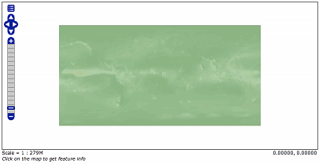
- Go back to the map preview and click the
GeoRSSitem in the drop down choice next totopp:states
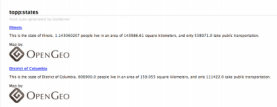
- Go back to the map preview and click the
OpenLayerslink next totopp:states. - Enable the options toolbar and specify the CQL filter:
1
STATE_ABBR EQ 'TX'
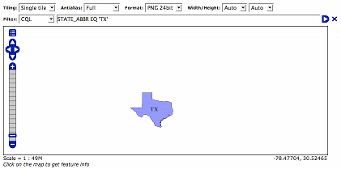
KML
- Go back to the map preview and click the
KMLlink next totopp:states - Open the result in Google Earth
- Zoom out as far as possible and notice the smaller states (on the east coast)
disappear.
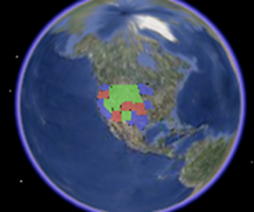
Close Google Earth
Warning: If you do not shut down Google Earth it will cache information and throw
off the next steps.Go to the feature type editor page for the
topp:statesfeature typeChange the
KML Regionating Attributeto “SAMP_POP” and change theKML Regionating Strategyto “external-sorting”:1
.. image:: states_kml_config.png
Submit and Apply changes
- Go back to the map preview page and again click the
KMLlink next totopp:states, opening the result in Google Earth - Zoom out as far as possible and notice the smaller population states (green)
disappear.
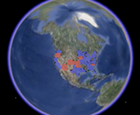
- Go back to the map preview page and click the
KMLlink next tonurc:Img_Sample, opening the result in Google Earth
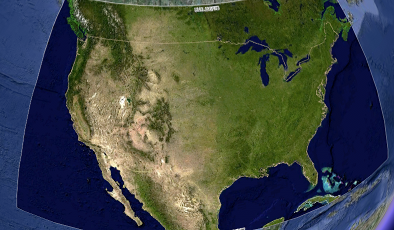
- Zoom in and notice tiles load
- Follow the link http://localhost:8080/geoserver/wms/kml?layers=topp:states&mode=refresh, opening the result in Google Earth
- Notice the KML reload every time the camera is stopped
Edit the description template for the states layer as follows:
1
2
3
4
5This is the state of ${STATE_NAME.value}.
<img src="http://www.netstate.com/states/symb/flags/images/${STATE_ABBR.value?lower_case}_fi.gif"/>
<br>
For more information visit <a href="http://en.wikipedia.org/wiki/${STATE_NAME.value}">Wikipedia</a>Refresh the KML by moving the camera and click on a placemark
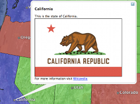
- Append the parameter “kmscore=0” to the above link and open the result in
Google Earth - Notice the rasterized version of the KML
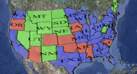
- Follow the link http://localhost:8080/geoserver/wms/kml?layers=topp:states&mode=download, saving the result to disk.
- Examine the file on disk and notice a raw dump of all placemarks for the
layer.
GeoWebCache
- Go the geowebcache demo page, http://localhost:8080/geoserver/gwc/demo
- Click the
EPSG:4326" link for ``topp:states - Zoom in and notice the tiles load.
- Repeat steps 2 to 3 for
EPSG:900913
Cite Test Guide
A step by step guide to the GeoServer Compliance Interoperability Test Engine (CITE).
Check out CITE tools
The CITE tools are available at https://github.com/jdeolive/geoserver-cite-tools. The README file contains the most update documentation of how to checkout and build the tools. The quick version is:1
2
3
4git clone git://github.com/jdeolive/geoserver-cite-tools.git
cd geoserver-cite-tools
git submodule update --init
mvn clean install
Run WFS 1.0 tests
Note: Running WFS 1.0 tests require PostGIS to be installed on the system.
Create a PostGIS user named “cite”:
1
createuser cite
Create a PostGIS databased named “cite”, owned by the “cite” user:
1
createdb -T template_postgis -U cite cite
Change directory to the
citewfs-1.0data directory and execute the scriptcite_data.sql:1
psql -U cite cite < cite_data.sql
Start GeoServer with the
citewfs-1.0data directory. Example:1
2
3cd <root of geoserver install>
export GEOSERVER_DATA_DIR=<root of geoserver sources>/data/citewfs-1.0
./bin/startup.shChange directory back to the cite tools and run the tests:
1
ant wfs-1.0
With the following parameters:
- Capabilities URL`
http://localhost:8080/geoserver/wfs?request=getcapabilities&service=wfs&version=1.0.0 Alltests included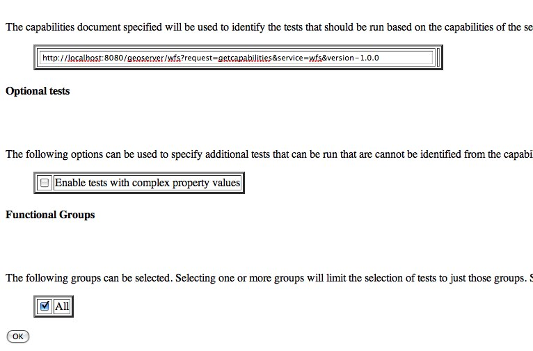
- Capabilities URL`
Run WFS 1.1 tests
Note: Running WFS 1.1 tests require PostGIS to be installed on the system.
Create a PostGIS user named “cite”:
1
createuser cite
Create a PostGIS databased named “cite”, owned by the “cite” user:
1
createdb -T template_postgis -U cite cite
Change directory to the
citewfs-1.1data directory and execute the scriptdataset-sf0.sql:1
psql -U cite cite < dataset-sf0.sql
Start GeoServer with the
citewfs-1.1data directory. Example:1
2
3cd <root of geoserver install>
export GEOSERVER_DATA_DIR=<root of geoserver sources>/data/citewfs-1.1
./bin/startup.shChange directory back to the cite tools and run the tests:
1
ant wfs-1.1
With the following parameters:
Capabilities URL
http://localhost:8080/geoserver/wfs?service=wfs&request=getcapabilities&version=1.1.0Supported Conformance Classes:- Ensure
WFS-Transactionis checked - Ensure
WFS-Xlinkis unchecked
- Ensure
GML Simple Features:SF-0
Run WMS 1.1 tests
- start GeoServer with the
citewms-1.1data directory. Change directory back to the cite tools and run the tests:
1
ant wms-1.1
With the following parameters:
Capabilities URL
http://localhost:8080/geoserver/wms?service=wms&request=getcapabilities&version=1.1.1UpdateSequence Values:- Ensure
Automaticis selected - “2” for
value that is lexically higher - “0” for
value that is lexically lower
- Ensure
Certification Profile:QUERYABLEOptional Tests:- Ensure
Recommendation Supportis checked - Ensure
GML FeatureInfois checked - Ensure
Fees and Access Constraintsis checked - For
BoundingBox ConstraintsensureEitheris selected
- Ensure
- Click
OK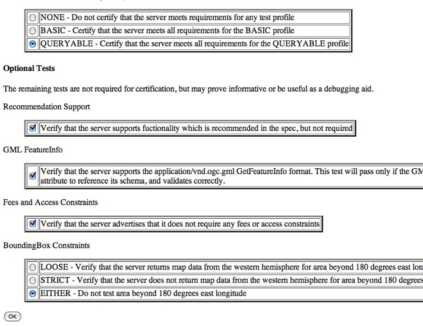
- Ensure
Recommendation Supportis checked - Ensure
GML FeatureInfois checked - Ensure
Fees and Access Constraintsis checked - For
BoundingBox ConstraintsensureEitheris selected
Run WCS 1.1 tests
- Start GeoServer with the
citewcs-1.1data directory. Change directory back to the cite tools and run the tests:
1
ant wcs-1.1
With the following parameters:
Capabilities URL:
http://localhost:8080/geoserver/wcs?service=wcs&request=getcapabilities&version=1.1.1- Click
Next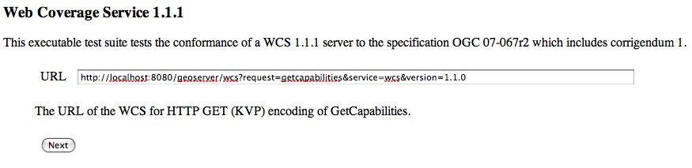
Accept the default values and click
Submit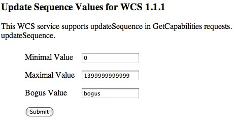
Run WCS 1.0 tests
Warning: The WCS specification does not allow a cite compliant WCS 1.0 and 1.1 version to co-exist. To successfully run the WCS 1.0 cite tests the
wms1_1-<VERSION>.jarmust be removed from the geoserverWEB-INF/libdirectory.
- Remove the wcs1_1-
.jar from WEB-INF/lib directory. - Start GeoServer with the
citewcs-1.0data directory. Change directory back to the cite tools and run the tests:
1
ant wcs-1.0
With the following parameters:
Capabilities URL:
http://localhost:8080/geoserver/wcs?service=wcs&request=getcapabilities&version=1.0.0MIME Header Setup: “image/tiff”Update Sequence Values:- “2” for
value that is lexically higher - “0” for
value that is lexically lower
- “2” for
Grid Resolutions:- “0.1” for
RESX - “0.1” for
RESY
- “0.1” for
Options:- Ensure
Verify that the server supports XML encodingis checked - Ensure
Verify that the server supports range set axisis checked
- Ensure
Schemas:- Ensure that
original schemasis selected
- Ensure that
- Click
OK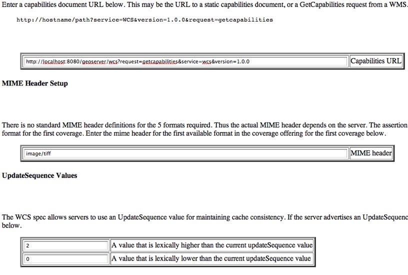
Teamengine Web Application
The Teamengine web application is useful for analyzing results of a test run. To run the web application execute:1
ant webapp
From the cite tools checkout. Once started the web app will be available at:
http://localhost:9090/teamengine
To run on a different port pass the -Dengine.port system property to ant command.
Translating GeoServer
We would like GeoServer available in as many languages as possible, so we want your help to add localizations / translations, specifically the GeoServer UI and documentation.
Translating the UI
The GeoServer UI stores text strings inside properties files. The default (English) files are named GeoServerApplication.properties and are located in the following directories:1
2
3
4
5
6
7/src/web/core/src/main/resources/
/src/web/demo/src/main/resources/
/src/web/gwc/src/main/resources/
/src/web/security/src/main/resources/
/src/web/wcs/src/main/resources/
/src/web/wfs/src/main/resources/
/src/web/wms/src/main/resources/
To translate the GeoServer UI to another language, copy and rename each of these files to be GeoServerApplication_[LANG].properties where [LANG] is the language code as defined in RFC 3066 For example, the language code for German is de and for Brazilian Portuguese is pt-BR.
Once created, each line in the files represents a string that will need to be translated. When finished, you will need to commit these files or submit a JIRA issue with attached patch. See the section on Source Code for more information on how to commit.
Editing in Eclipse
If you are using Eclipse, you can install the Eclipse ResourceBundle Editor. Once installed, you can edit the src/main/resources/GeoServerApplication.properties files in all web-* projects (web-core, web-demo, etc.) with the ResourceBundle editor.
Translating documentation
The GeoServer User Manual contains a wealth of information from the novice to the experienced GeoServer user. It is written using the Sphinx Documentation Generator. The stable branch version of the User Manual exists as the following URL:
http://docs.geoserver.org/stable/en/user/
Built from the following source files:
/doc/en/user/
To create a User Manual in a different language, first create a directory called /doc/[LANG]/, where [LANG] is the language code as defined in RFC 3066. The you can copy the contents of /doc/en/user/ to /doc/[LANG]/user and edit accordingly, or generate a new Sphinx project in /doc/[LANG]/user. (See the Sphinx Quickstart http://sphinx.pocoo.org/tutorial.html for more information about creating a new project.)
The GeoServer Sphinx theme exists at /doc/en/user/themes, so that can be copied (and modified if desired) to /doc/[LANG]/user/themes.
When finished, you will need to commit the content (if you have commit rights) or submit a JIRA issue with attached patch. See the section on Source Code for more information on how to commit. Setting up the documentation to be hosted on docs.geoserver.org will require a project administrator; please send an email to the mailing list for more details.
Tips
- See the GeoServer Documentation Manual for more information about writing documentation.
- The Developer Manual exists at
/doc/en/developer. The same procedures for editing the User Manual apply to the Developer Manual.